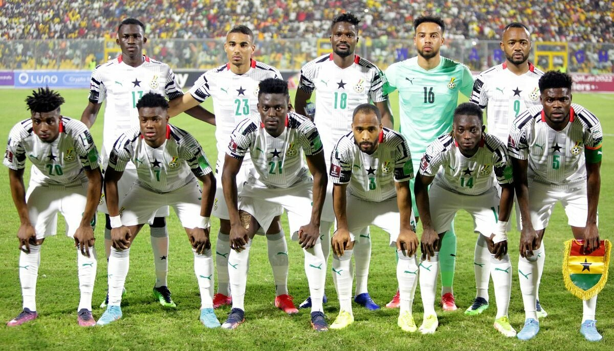

Seleção de Gana nas Copas do Mundo
A seleção ganesa participou de três edições da Copa do Mundo de futebol. Desde 2006 Gana participa consecutivamente do Mundial de Futebol. A seleção de Gana chegou às oitavas-de-final na sua primeira participação em 2006. Em 2010 foi eliminada nas quartas-de-final e em 2014 foi eliminada na Primeira Fase.
É uma das maiores forças do futebol africano. Venceu quatro vezes a Copa das Nações Africanas em 1963, 1965, 1978 e 1982 e foi quatro vezes vice-campeão em 1968, 1970, 1992 e 2010. Venceu cinco vezes a Copa da África Ocidental em 1982, 1983, 1984, 1986 e 1987. E participou três vezes da Copa do Mundo (2006, 2010, 2014). Nos Jogos Olímpicos, conquistou a medalha de bronze em 1992 sendo a primeira equipe africana de futebol a conquistar uma medalha olímpica. Nos Jogos Pan-Africanos conquistou duas medalha de bronze em 1978 e 2003. Na Copa do Mundo FIFA de 2006, foi a única seleção da África a passar para a segunda fase da competição, após eliminar a então favorita República Checa. A Seleção Ganesa de Futebol foi eliminada pelo Brasil nas oitavas de final, ao perder por 3 a 0, ficando na 13ª posição na classificação final. Na Copa do Mundo FIFA de 2010 Gana obteve uma melhor colocação, saindo nas quartas de final. Novamente foi a única representante do continente africano a passar para a segunda fase da competição após uma vitória sobre a Sérvia, um empate com a Austrália e uma derrota para a Alemanha na fase de grupos. Nas oitavas de final, venceram os Estados Unidos e nas quartas, em uma das partidas mais emocionantes do mundial, foram eliminados pelo Uruguai na disputa de pênaltis. Gana também se destaca nas categorias de base tendo, por uma vez, vencido o Campeonato Mundial de Futebol Sub-20, em 2009, e sendo por duas vezes vice-campeão do torneio, em 1993 e 2001. Também, por duas vezes, venceu o Campeonato Mundial de Futebol Sub-17, em 1991 e 1995.
